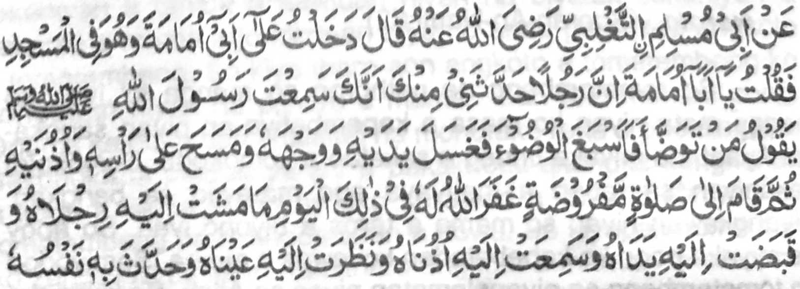
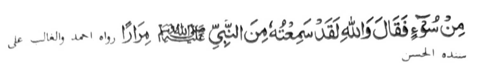

Miyaka thitayan ko Abi Muslim a pitharo iyan "Siyoledan ko so Abi Umamah a sekaniyan na zisi-i sa Masjid ago pitharo aken, 'Hay Abi Umamah, mata-an a aden a sakatao a mama a pitharo iyan raken a phoon reka (a katharo) a mata-an a miyaneg ka so Rasulollah (Sallallaho 'Alaihi Wasallam) a gi-i niyan tharo-on a sa tao a magabdas a phiya-piyaan niyan so abdas sa onaban niyan so paras iyan go so mbala a lima niyan go ramesen niyan so olo niyan go so dowa tangila niyan (taman ko dowa a a-i niyan) oriyan niyan na itindeg iyan so Sambayang a paralo na rila-an o Allah rekaniyan sangkoto a gawi-i so marata (dosa) a liyalakao o dowa a-i niyan, go so miyakawa o dowa lima niyan, go so miyaneg o dowa tangila niyan, go so miya ilay o dowa mata niyan, go so minititik ko pamikiran niyan a ped ko dosa.' Pitharo iyan a ibet ko Allah ka sabenar a miyaneg aken angkanan pho-on ko Nabi (Sallallaho 'Alaihi Wasallam) oman oman."
Madakel ko manga Sahabah a miyanothol sangka-iya Hadith a baden malo miyakambida-bida so kiyapaka okit iyan. Apia so manga tao a bigan sa (kailay a) "Kashf" na pekha-ilairan so manga dosa a pekharoro. Miyapanothol a so lmam Abu Hanifa (Rahmatollahi ’Alaihi) na mapetharo iyan phoon ko kapekhatatak o ig phoon ko manga anggaota o tao a gi-i magabdas so manga dosa a pekhada. Si-i ko tothol o Usman (Radhiallaho ’Anho), na so Rasulollah (Sallallaho 'Alaihi Wasallam) na miyapanothol a initapa-os iyan oba maribat so tao ko kanggalebek sa dosa a i-inamen niyan a khalalasoto o Sambayang. Da-a ba sabap a ba tano nggalebek sa dosa sabap sangka-iya miya-aloy (a Hadith). Aya di ron salakao na ba tano matangked a miyaka-tarotop so Sambayang a pinggalebek tano. Opama ka so Allah na irila Iyan reketano so manga dosa tano, na pho-on noto ko miyatindos a limo ago gagao Niyan. Tanto a maporo a kada a tadem opama ka sopaka tano so Allah sabap sa (kasarig tano sa) kala lyani Kapedi go Gagao, ago Ma-ap.